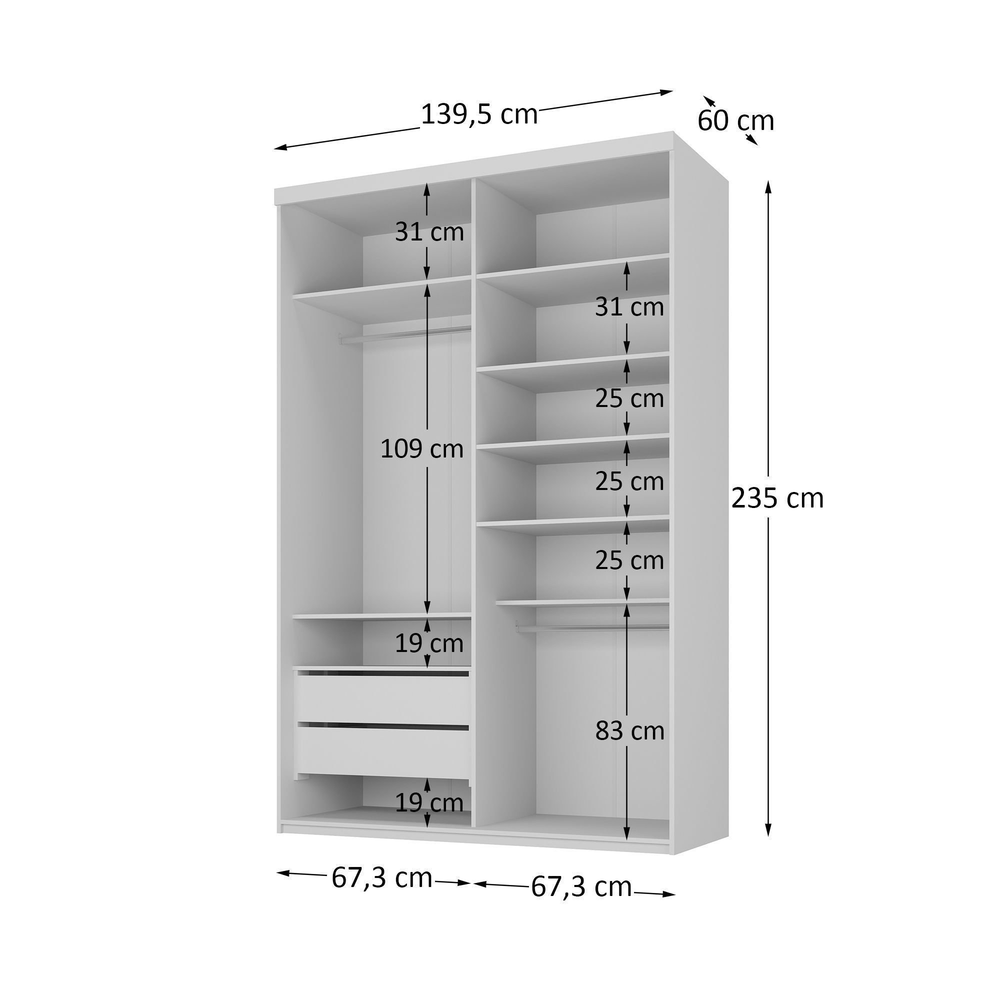

Guarda-Roupa Solteiro 2 Portas com Espelho 100% MDF Geneve Bege/Panna — RR Móveis
2 correr · 2 espelhos- À vistaR$ 2.289,98
- Medidas139,5 × 235 × 60
- Folga largura0,5 cm
- Folga teto21 cm

Foto do anúncio- Anúncio: Guarda-Roupa Solteiro 2 Portas com Espelho 100% MDF Geneve Bege/Panna (MadeiraMadeira) · ID 904543
- Preço: R$ 3.771,73 · R$ 2.289,98 (15% off, MM, 4/9/2026) · ou 12× R$ 224,51
- Medidas: 139,5 × 235 × 60 cm · 140 kg · 100% MDF 15 mm · acabamento BP melamínico
- Portas: 2 de correr · 2 portas com espelho inteiro (223 × 66 cm cada) · trilho alumínio · anti-descarrilhamento
- Interior: 2 gavetas (corrediça telescópica) · 6 prateleiras · 1 cabideiro · 1 calceiro
- Posição: parede de 3,00 m · trecho 1,40 m entre cabeceira e porta · encostado na parede da cabeceira (x = 0 → 139,5 cm)
- Folga no vão 1,40 m: 140 − 139,5 = 0,5 cm até o vão da porta — no limite; conferir medida real montado
- Folga no teto: 2,56 m − 235 cm = 21 cm (pés 5 cm inclusos na altura do anúncio)
- Cor: Bege/Panna (variantes no anúncio: Branco, Preto, Urbi)
- Montagem: alta complexidade · manual incluso · garantia 3 meses
- O que falha: largura no limite (0,5 cm) · profundidade 60 cm ocupa corredor junto à porta · cama ainda não posicionada na 2,40 m
Pesquisa 4/9/2026: mesmo SKU na MadeiraMadeira (Geneve 139,5 cm, 2 espelhos). Demais lojas do circuito não conferidas para Bege/Panna.